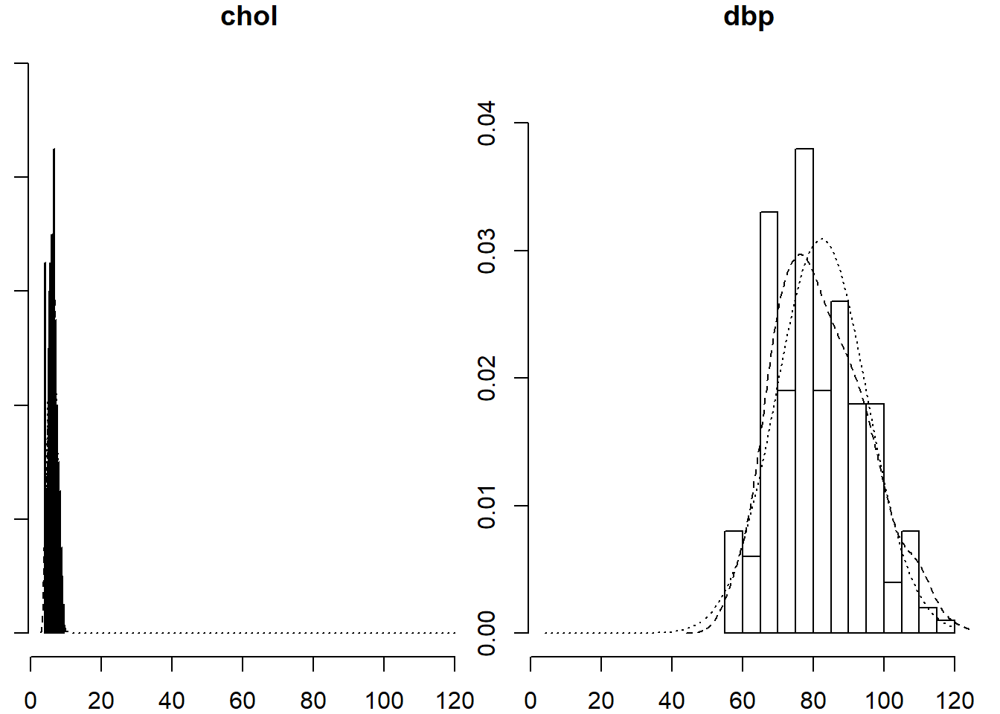
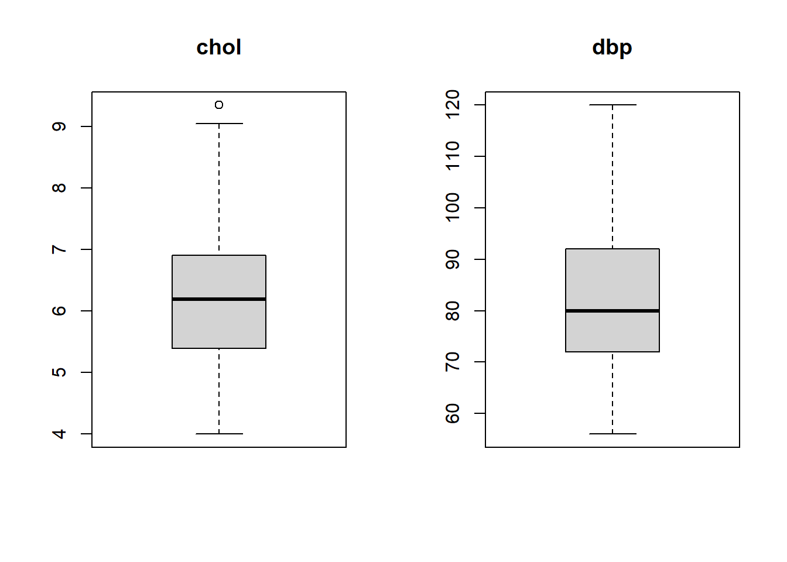
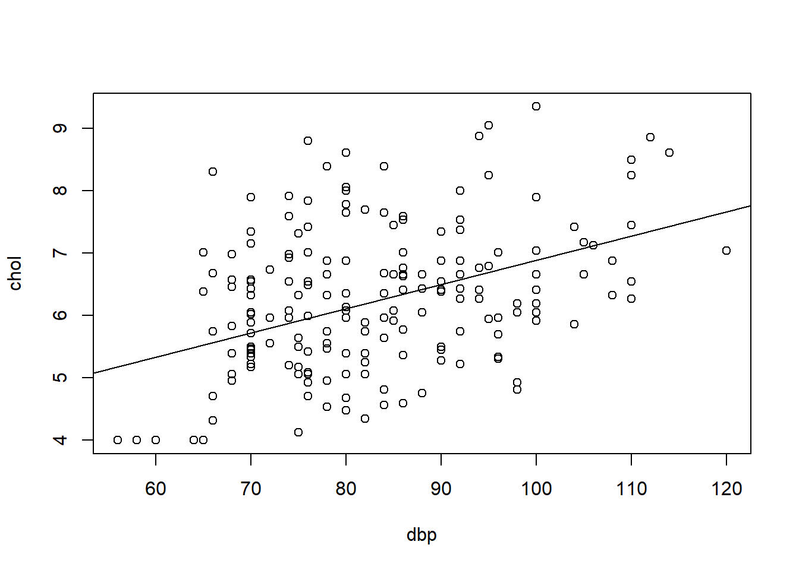
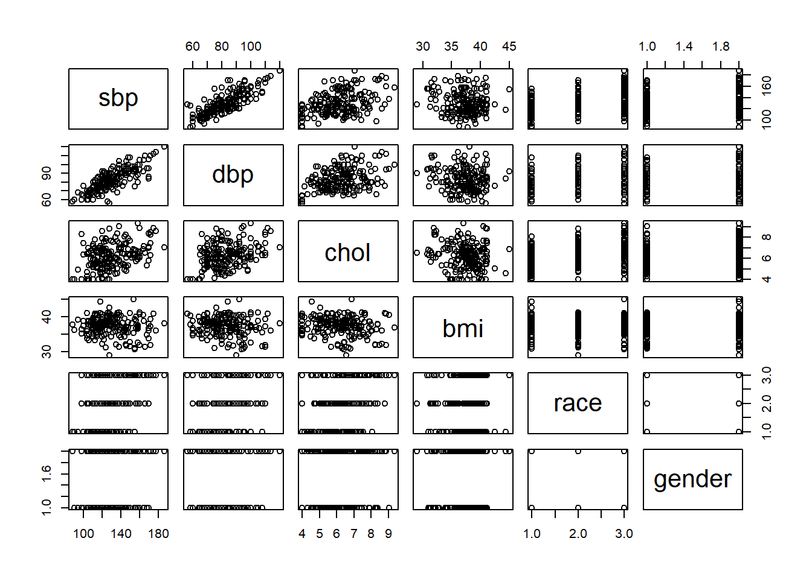
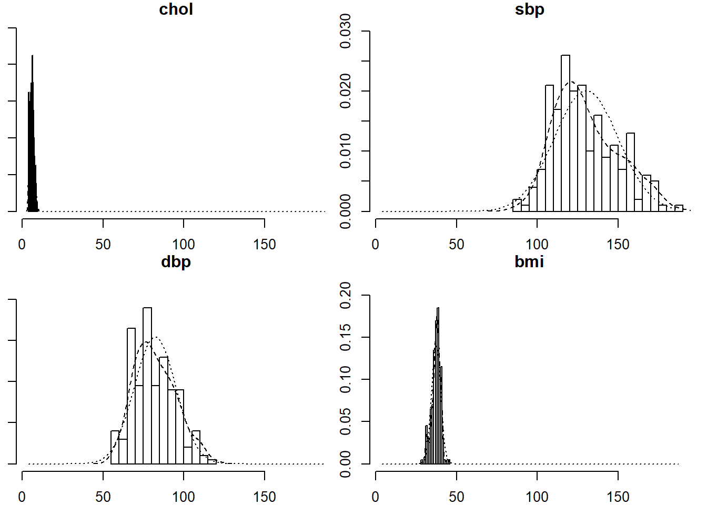
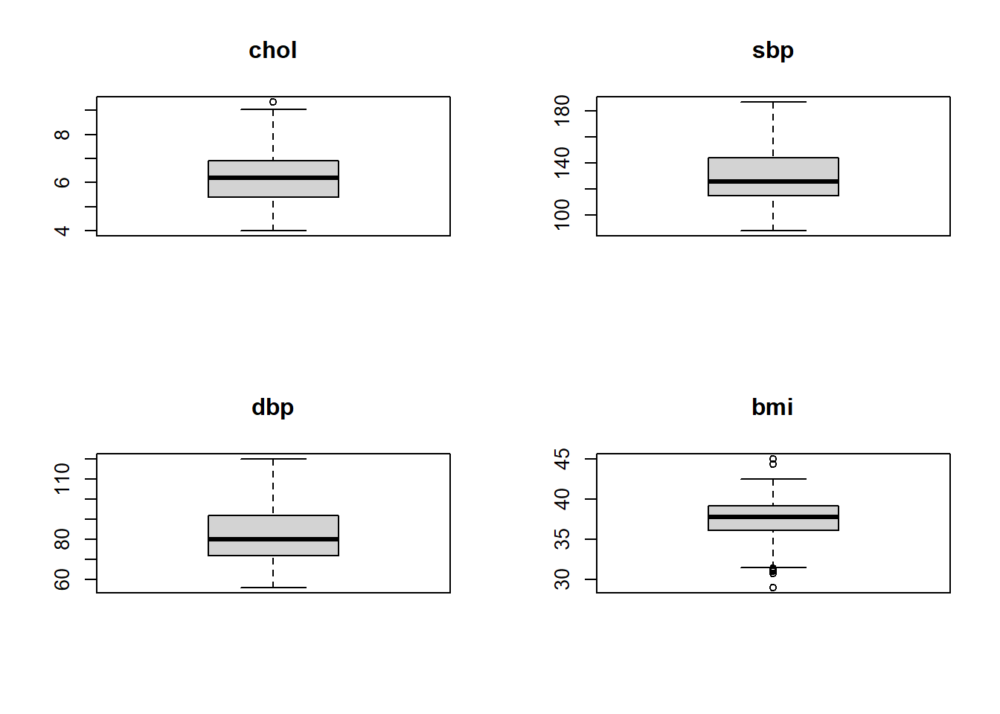
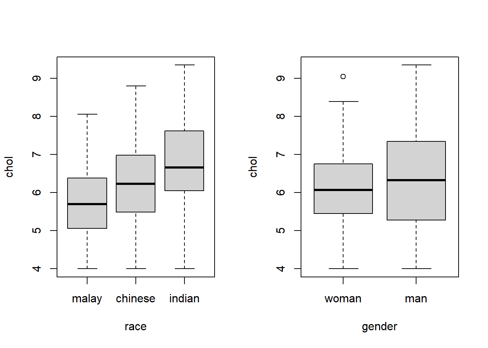
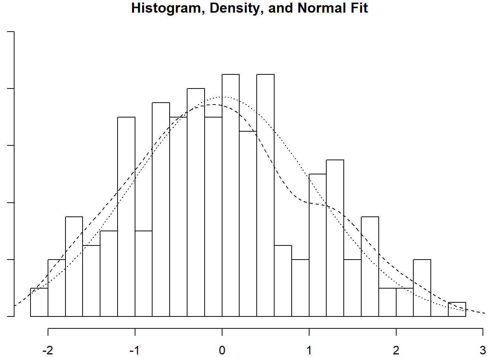
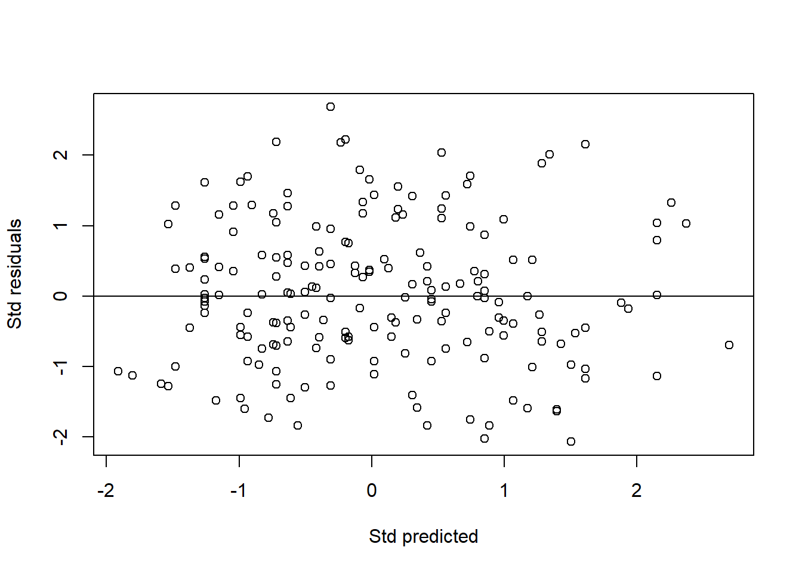
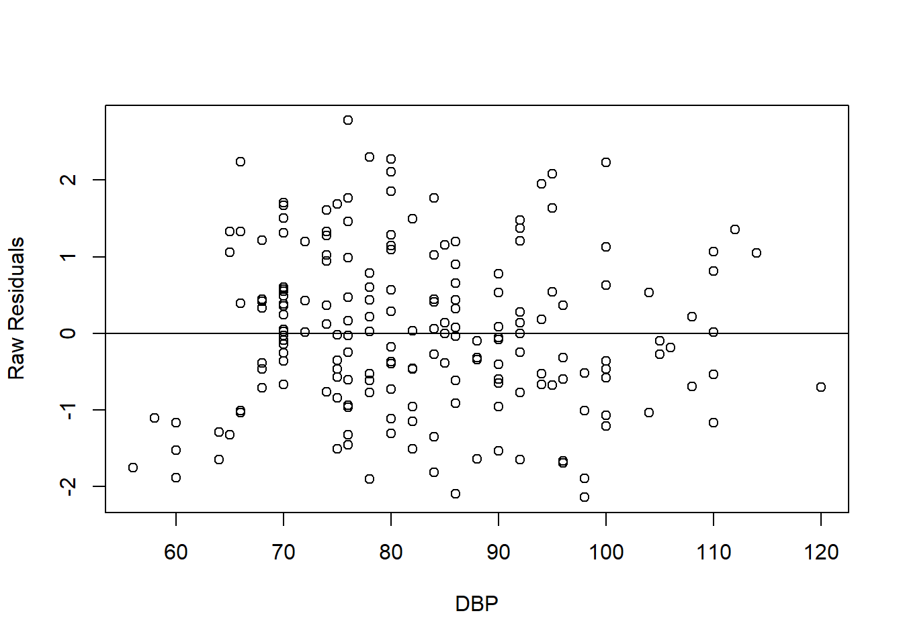

Chapter 8 Linear Regression
A statistical method to model relationship between:
- outcome: numerical variable.
- predictors/independent variables: numerical, categorical variables.
A type of Generalized Linear Models (GLMs), which also includes other outcome types, e.g. categorical and count.
Basically, the linear relationship is structured as follows,
\[numerical\ outcome = numerical\ predictors + categorical\ predictors\]
8.1 Simple linear regression (SLR)
8.1.1 About SLR
Model linear (straight line) relationship between:
- outcome: numerical variable.
- a predictor: numerical variable (only).
Note: What if the predictor is a categorical variable? Remember, we already handled that with one-way ANOVA.
- Formula, \[numerical\ outcome = intercept + coefficient \times numerical\ predictor\] in short, \[\hat y = \beta_0 + \beta_1x_1\] where \(\hat y\) is the predicted value of the outcome y.
8.1.2 Analysis
8.1.2.1 Libraries
# library
library(foreign)
library(epiDisplay)## Loading required package: survival## Loading required package: MASS## Loading required package: nnetlibrary(psych)##
## Attaching package: 'psych'## The following objects are masked from 'package:epiDisplay':
##
## alpha, cs, lookuplibrary(lattice)##
## Attaching package: 'lattice'## The following object is masked from 'package:epiDisplay':
##
## dotplotlibrary(rsq)
library(car)## Loading required package: carData##
## Attaching package: 'car'## The following object is masked from 'package:psych':
##
## logitlibrary(broom)
library(tidyverse)## -- Attaching packages --------------------------------------- tidyverse 1.3.1 --## v ggplot2 3.3.5 v purrr 0.3.4
## v tibble 3.1.6 v dplyr 1.0.7
## v tidyr 1.1.4 v stringr 1.4.0
## v readr 2.1.1 v forcats 0.5.1## Warning: package 'tibble' was built under R version 4.1.2## -- Conflicts ------------------------------------------ tidyverse_conflicts() --
## x ggplot2::%+%() masks psych::%+%()
## x ggplot2::alpha() masks psych::alpha(), epiDisplay::alpha()
## x dplyr::filter() masks stats::filter()
## x dplyr::lag() masks stats::lag()
## x dplyr::recode() masks car::recode()
## x dplyr::select() masks MASS::select()
## x purrr::some() masks car::some()8.1.2.2 Data set
# data
coronary = read.dta(here::here("data","coronary.dta"))
str(coronary)## 'data.frame': 200 obs. of 9 variables:
## $ id : num 1 14 56 61 62 64 69 108 112 134 ...
## $ cad : Factor w/ 2 levels "no cad","cad": 1 1 1 1 1 1 2 1 1 1 ...
## $ sbp : num 106 130 136 138 115 124 110 112 138 104 ...
## $ dbp : num 68 78 84 100 85 72 80 70 85 70 ...
## $ chol : num 6.57 6.33 5.97 7.04 6.66 ...
## $ age : num 60 34 36 45 53 43 44 50 43 48 ...
## $ bmi : num 38.9 37.8 40.5 37.6 40.3 ...
## $ race : Factor w/ 3 levels "malay","chinese",..: 3 1 1 1 3 1 1 2 2 2 ...
## $ gender: Factor w/ 2 levels "woman","man": 1 1 1 1 2 2 2 1 1 2 ...
## - attr(*, "datalabel")= chr "Written by R. "
## - attr(*, "time.stamp")= chr ""
## - attr(*, "formats")= chr [1:9] "%9.0g" "%9.0g" "%9.0g" "%9.0g" ...
## - attr(*, "types")= int [1:9] 100 108 100 100 100 100 100 108 108
## - attr(*, "val.labels")= chr [1:9] "" "cad" "" "" ...
## - attr(*, "var.labels")= chr [1:9] "id" "cad" "sbp" "dbp" ...
## - attr(*, "version")= int 7
## - attr(*, "label.table")=List of 3
## ..$ cad : Named int [1:2] 1 2
## .. ..- attr(*, "names")= chr [1:2] "no cad" "cad"
## ..$ race : Named int [1:3] 1 2 3
## .. ..- attr(*, "names")= chr [1:3] "malay" "chinese" "indian"
## ..$ gender: Named int [1:2] 1 2
## .. ..- attr(*, "names")= chr [1:2] "woman" "man"8.1.3 Data exploration
8.1.3.1 Descriptive statistics
summ(coronary[c("chol", "dbp")])##
## No. of observations = 200
##
## Var. name obs. mean median s.d. min. max.
## 1 chol 200 6.2 6.19 1.18 4 9.35
## 2 dbp 200 82.31 80 12.9 56 1208.1.3.2 Plots
multi.hist(coronary[c("chol", "dbp")], ncol = 2)
par(mfrow = c(1, 2))
mapply(boxplot, coronary[c("chol", "dbp")],
main = colnames(coronary[c("chol", "dbp")]))
## chol dbp
## stats numeric,5 numeric,5
## n 200 200
## conf numeric,2 numeric,2
## out 9.35 numeric,0
## group 1 numeric,0
## names "" ""par(mfrow = c(1, 1))8.1.4 Univariable
Fit model,
# model: chol ~ dbp
slr_chol = glm(chol ~ dbp, data = coronary)
summary(slr_chol)##
## Call:
## glm(formula = chol ~ dbp, data = coronary)
##
## Deviance Residuals:
## Min 1Q Median 3Q Max
## -1.9967 -0.8304 -0.1292 0.7734 2.8470
##
## Coefficients:
## Estimate Std. Error t value Pr(>|t|)
## (Intercept) 2.995134 0.492092 6.087 5.88e-09 ***
## dbp 0.038919 0.005907 6.589 3.92e-10 ***
## ---
## Signif. codes: 0 '***' 0.001 '**' 0.01 '*' 0.05 '.' 0.1 ' ' 1
##
## (Dispersion parameter for gaussian family taken to be 1.154763)
##
## Null deviance: 278.77 on 199 degrees of freedom
## Residual deviance: 228.64 on 198 degrees of freedom
## AIC: 600.34
##
## Number of Fisher Scoring iterations: 2Confint(slr_chol) # 95% CI## Estimate 2.5 % 97.5 %
## (Intercept) 2.99513427 2.03065127 3.95961727
## dbp 0.03891876 0.02734161 0.05049591Important results,
- Coefficient, \(\beta\).
- 95% CI.
- P-value.
Obtain \(R^2\), % of variance explained,
rsq(slr_chol, adj = T)## [1] 0.1756834Scatter plot,
plot(chol ~ dbp, data = coronary)
abline(slr_chol)
this allows assessment of normality, linearity and equal variance assumptions. We expect eliptical/oval shape (normality), equal scatter of dots on both sides of the prediction line (equal variance). Both these indicate linear relationship between chol and dbp.
8.1.4.1 Interpretation
- 1mmHg increase in DBP causes 0.04mmol/L increase in cholestrol.
- DBP explains 17.6% variance in cholestrol.
8.1.4.2 Model equation
\[chol = 3.0 + 0.04\times dbp\]
8.2 Multiple linear regression (MLR)
8.2.1 About MLR
Model linear relationship between:
- outcome: numerical variable.
- predictors: numerical, categorical variables.
Note: MLR is a term that refers to linear regression with two or more numerical variables. Whenever we have both numerical and categorical variables, the proper term for the regression model is General Linear Model. However, we will use the term MLR in this workshop.
- Formula, \[\begin{aligned} numerical\ outcome = &\ intercept + coefficients \times numerical\ predictors \\ & + coefficients \times categorical\ predictors \end{aligned}\] in a shorter form, \[\hat y = \beta_0 + \beta_1x_1 + \beta_2x_2 + ... + \beta_kx_k\] where we have k predictors.
Whenever the predictor is a categorical variable with more than two levels, we use dummy variable(s). This can be easily specified in R using factor() if the variable is not yet properly specified as such. There is no problem with binary categorical variable.
For a categorical variable with more than two levels, the number of dummy variables (i.e. once turned into several binary variables) equals number of levels minus one. For example, whenever we have four levels, we will obtain three dummy (binary) variables.
8.2.2 Analysis
8.2.2.1 Review data set
# data
str(coronary)## 'data.frame': 200 obs. of 9 variables:
## $ id : num 1 14 56 61 62 64 69 108 112 134 ...
## $ cad : Factor w/ 2 levels "no cad","cad": 1 1 1 1 1 1 2 1 1 1 ...
## $ sbp : num 106 130 136 138 115 124 110 112 138 104 ...
## $ dbp : num 68 78 84 100 85 72 80 70 85 70 ...
## $ chol : num 6.57 6.33 5.97 7.04 6.66 ...
## $ age : num 60 34 36 45 53 43 44 50 43 48 ...
## $ bmi : num 38.9 37.8 40.5 37.6 40.3 ...
## $ race : Factor w/ 3 levels "malay","chinese",..: 3 1 1 1 3 1 1 2 2 2 ...
## $ gender: Factor w/ 2 levels "woman","man": 1 1 1 1 2 2 2 1 1 2 ...
## - attr(*, "datalabel")= chr "Written by R. "
## - attr(*, "time.stamp")= chr ""
## - attr(*, "formats")= chr [1:9] "%9.0g" "%9.0g" "%9.0g" "%9.0g" ...
## - attr(*, "types")= int [1:9] 100 108 100 100 100 100 100 108 108
## - attr(*, "val.labels")= chr [1:9] "" "cad" "" "" ...
## - attr(*, "var.labels")= chr [1:9] "id" "cad" "sbp" "dbp" ...
## - attr(*, "version")= int 7
## - attr(*, "label.table")=List of 3
## ..$ cad : Named int [1:2] 1 2
## .. ..- attr(*, "names")= chr [1:2] "no cad" "cad"
## ..$ race : Named int [1:3] 1 2 3
## .. ..- attr(*, "names")= chr [1:3] "malay" "chinese" "indian"
## ..$ gender: Named int [1:2] 1 2
## .. ..- attr(*, "names")= chr [1:2] "woman" "man"We exclude id, cad and age from our data for the purpose of this analysis, keeping only sbp , dbp, bmi, race and gender. We will add age later in the exercise.
coronary <- coronary %>% dplyr::select(-id, -cad, -age)
# remove id, cad, age from our data since we're not going to use them,
# easier to specifiy multivariable model.8.2.2.2 Data exploration
8.2.2.2.1 Descriptive statistics
summ(coronary[c("chol", "sbp", "dbp", "bmi")])##
## No. of observations = 200
##
## Var. name obs. mean median s.d. min. max.
## 1 chol 200 6.2 6.19 1.18 4 9.35
## 2 sbp 200 130.18 126 19.81 88 187
## 3 dbp 200 82.31 80 12.9 56 120
## 4 bmi 200 37.45 37.8 2.68 28.99 45.03codebook(coronary[c("race", "gender")])##
##
##
## race :
## Frequency Percent
## malay 73 36.5
## chinese 64 32.0
## indian 63 31.5
##
## ==================
## gender :
## Frequency Percent
## woman 100 50
## man 100 50
##
## ==================8.2.2.2.2 Plots
plot(coronary)
multi.hist(coronary[c("chol", "sbp", "dbp", "bmi")])
par(mfrow = c(2, 2))
mapply(boxplot, coronary[c("chol", "sbp", "dbp", "bmi")],
main = colnames(coronary[c("chol", "sbp", "dbp", "bmi")]))
## chol sbp dbp bmi
## stats numeric,5 numeric,5 numeric,5 numeric,5
## n 200 200 200 200
## conf numeric,2 numeric,2 numeric,2 numeric,2
## out 9.35 numeric,0 numeric,0 numeric,8
## group 1 numeric,0 numeric,0 numeric,8
## names "" "" "" ""par(mfrow = c(1, 1))
par(mfrow = c(1, 2))
boxplot(chol ~ race, data = coronary)
boxplot(chol ~ gender, data = coronary)
par(mfrow = c(1, 1))8.2.2.3 Variable selection
8.2.2.4 slr
We want to choose only variables with P-values < 0.25 to be included in MLR. Obtaining the P-values for each variable is easy by LR test,
slr_chol0 = glm(chol ~ 1, data = coronary)
summary(slr_chol0)##
## Call:
## glm(formula = chol ~ 1, data = coronary)
##
## Deviance Residuals:
## Min 1Q Median 3Q Max
## -2.19854 -0.80854 -0.01104 0.69021 3.15146
##
## Coefficients:
## Estimate Std. Error t value Pr(>|t|)
## (Intercept) 6.19854 0.08369 74.06 <2e-16 ***
## ---
## Signif. codes: 0 '***' 0.001 '**' 0.01 '*' 0.05 '.' 0.1 ' ' 1
##
## (Dispersion parameter for gaussian family taken to be 1.400874)
##
## Null deviance: 278.77 on 199 degrees of freedom
## Residual deviance: 278.77 on 199 degrees of freedom
## AIC: 637.99
##
## Number of Fisher Scoring iterations: 28.2.2.4.1 Multivariable
Perform MLR with all selected variables,
# all
mlr_chol = glm(chol ~ sbp + dbp + bmi + race, data = coronary)
#mlr_chol = glm(chol ~ ., data = coronary) # shortcut
summary(mlr_chol)##
## Call:
## glm(formula = chol ~ sbp + dbp + bmi + race, data = coronary)
##
## Deviance Residuals:
## Min 1Q Median 3Q Max
## -2.17751 -0.73860 -0.02674 0.63163 2.90926
##
## Coefficients:
## Estimate Std. Error t value Pr(>|t|)
## (Intercept) 4.842338 1.265149 3.827 0.000175 ***
## sbp 0.000975 0.006990 0.139 0.889210
## dbp 0.028350 0.010327 2.745 0.006615 **
## bmi -0.038537 0.028170 -1.368 0.172879
## racechinese 0.354039 0.183169 1.933 0.054710 .
## raceindian 0.716327 0.200346 3.575 0.000441 ***
## ---
## Signif. codes: 0 '***' 0.001 '**' 0.01 '*' 0.05 '.' 0.1 ' ' 1
##
## (Dispersion parameter for gaussian family taken to be 1.089387)
##
## Null deviance: 278.77 on 199 degrees of freedom
## Residual deviance: 211.34 on 194 degrees of freedom
## AIC: 592.61
##
## Number of Fisher Scoring iterations: 2rsq(mlr_chol, adj = T)## [1] 0.2223518Focus on,
- Coefficients, \(\beta\)s.
- 95% CI.
- P-values.
For model fit,
- \(R^2\) – % of variance explained by the model.
- Akaike Information Criterion, AIC – for comparison with other models. This is not useful alone, but for comparison with other models. The model with the lowest AIC is the best model.
Looking at all these results, we choose:
chol ~ dbp + race
which has the lowest AIC.
mlr_chol1 = glm(chol ~ dbp + race, data = coronary)
summary(mlr_chol1)##
## Call:
## glm(formula = chol ~ dbp + race, data = coronary)
##
## Deviance Residuals:
## Min 1Q Median 3Q Max
## -2.1378 -0.7068 -0.0289 0.5997 2.7778
##
## Coefficients:
## Estimate Std. Error t value Pr(>|t|)
## (Intercept) 3.298028 0.486213 6.783 1.36e-10 ***
## dbp 0.031108 0.006104 5.096 8.14e-07 ***
## racechinese 0.359964 0.182149 1.976 0.049534 *
## raceindian 0.713690 0.190883 3.739 0.000243 ***
## ---
## Signif. codes: 0 '***' 0.001 '**' 0.01 '*' 0.05 '.' 0.1 ' ' 1
##
## (Dispersion parameter for gaussian family taken to be 1.088777)
##
## Null deviance: 278.77 on 199 degrees of freedom
## Residual deviance: 213.40 on 196 degrees of freedom
## AIC: 590.55
##
## Number of Fisher Scoring iterations: 2Our chosen model:
mlr_chol1: chol ~ dbp + race
summary(mlr_chol1)##
## Call:
## glm(formula = chol ~ dbp + race, data = coronary)
##
## Deviance Residuals:
## Min 1Q Median 3Q Max
## -2.1378 -0.7068 -0.0289 0.5997 2.7778
##
## Coefficients:
## Estimate Std. Error t value Pr(>|t|)
## (Intercept) 3.298028 0.486213 6.783 1.36e-10 ***
## dbp 0.031108 0.006104 5.096 8.14e-07 ***
## racechinese 0.359964 0.182149 1.976 0.049534 *
## raceindian 0.713690 0.190883 3.739 0.000243 ***
## ---
## Signif. codes: 0 '***' 0.001 '**' 0.01 '*' 0.05 '.' 0.1 ' ' 1
##
## (Dispersion parameter for gaussian family taken to be 1.088777)
##
## Null deviance: 278.77 on 199 degrees of freedom
## Residual deviance: 213.40 on 196 degrees of freedom
## AIC: 590.55
##
## Number of Fisher Scoring iterations: 2Confint(mlr_chol1) # 95% CI of the coefficients## Estimate 2.5 % 97.5 %
## (Intercept) 3.29802826 2.345067995 4.25098852
## dbp 0.03110811 0.019143668 0.04307255
## racechinese 0.35996365 0.002958566 0.71696873
## raceindian 0.71369024 0.339566932 1.08781356Compare this model with the no-variable model and all-variable model by LR test and AIC comparison,
# LR test
anova(slr_chol0, mlr_chol1, test = "LRT") # sig. better than no var at all!## Analysis of Deviance Table
##
## Model 1: chol ~ 1
## Model 2: chol ~ dbp + race
## Resid. Df Resid. Dev Df Deviance Pr(>Chi)
## 1 199 278.77
## 2 196 213.40 3 65.373 5.755e-13 ***
## ---
## Signif. codes: 0 '***' 0.001 '**' 0.01 '*' 0.05 '.' 0.1 ' ' 1# model with no var at all is called Null Model
anova(mlr_chol, mlr_chol1, test = "LRT") # no sig. dif with all vars model,## Analysis of Deviance Table
##
## Model 1: chol ~ sbp + dbp + bmi + race
## Model 2: chol ~ dbp + race
## Resid. Df Resid. Dev Df Deviance Pr(>Chi)
## 1 194 211.34
## 2 196 213.40 -2 -2.0593 0.3886# model with 2 vars (dbp & race) is just as good as full model (with all the vars)
# model with all vars is called Saturated Model# AIC
AIC(slr_chol0, mlr_chol1, mlr_chol)## df AIC
## slr_chol0 2 637.9921
## mlr_chol1 5 590.5459
## mlr_chol 7 592.6065# our final model has the lowest AIC8.2.3 Multicollinearity, MC
Multicollinearity is the problem of repetitive/redundant variables – high correlations between predictors. MC is checked by Variance Inflation Factor (VIF). VIF > 10 indicates MC problem.
vif(mlr_chol1) # all < 10## GVIF Df GVIF^(1/(2*Df))
## dbp 1.132753 1 1.064309
## race 1.132753 2 1.0316538.2.4 Interaction, *
Interaction is the predictor variable combination that requires interpretation of regression coefficients separately based on the levels of the predictor (e.g. separate analysis for each race group, Malay vs Chinese vs Indian). This makes interpreting our analysis complicated. So, most of the time, we pray not to have interaction in our regression model.
summary(glm(chol ~ dbp*race, data = coronary)) # dbp*race not sig.##
## Call:
## glm(formula = chol ~ dbp * race, data = coronary)
##
## Deviance Residuals:
## Min 1Q Median 3Q Max
## -2.10485 -0.77524 -0.02423 0.58059 2.74380
##
## Coefficients:
## Estimate Std. Error t value Pr(>|t|)
## (Intercept) 2.11114 0.92803 2.275 0.024008 *
## dbp 0.04650 0.01193 3.897 0.000134 ***
## racechinese 1.95576 1.28477 1.522 0.129572
## raceindian 2.41530 1.25766 1.920 0.056266 .
## dbp:racechinese -0.02033 0.01596 -1.273 0.204376
## dbp:raceindian -0.02126 0.01529 -1.391 0.165905
## ---
## Signif. codes: 0 '***' 0.001 '**' 0.01 '*' 0.05 '.' 0.1 ' ' 1
##
## (Dispersion parameter for gaussian family taken to be 1.087348)
##
## Null deviance: 278.77 on 199 degrees of freedom
## Residual deviance: 210.95 on 194 degrees of freedom
## AIC: 592.23
##
## Number of Fisher Scoring iterations: 2# in R, it is easy to fit interaction by *
# dbp*race will automatically include all vars involved i.e. equal to
# glm(chol ~ dbp + race + dbp:race, data = coronary)
# use : to just include just the interactionThere is no interaction here because the included interaction term was insignificant.
8.3 Model fit assessment: Residuals
Histogram
Raw residuals: Normality assumption.
rraw_chol = resid(mlr_chol1) # unstandardized
multi.hist(rraw_chol)
Scatter plots
Standardized residuals vs Standardized predicted values: Overall – normality, linearity and equal variance assumptions.
rstd_chol = rstandard(mlr_chol1) # standardized residuals
pstd_chol = scale(predict(mlr_chol1)) # standardized predicted values
plot(rstd_chol ~ pstd_chol, xlab = "Std predicted", ylab = "Std residuals")
abline(0, 0) # normal, linear, equal variance The dots should form elliptical/oval shape (normality) and scattered roughly equal above and below the zero line (equal variance). Both these indicate linearity.
Raw residuals vs Numerical predictor by each predictors: Linearity assumption.
plot(rraw_chol ~ coronary$dbp, xlab = "DBP", ylab = "Raw Residuals")
abline(0, 0)
8.4 Interpretation
Now we have decided on our final model, rename the model,
# rename the selected model
mlr_chol_final = mlr_chol1and interpret the model,
summary(mlr_chol_final)##
## Call:
## glm(formula = chol ~ dbp + race, data = coronary)
##
## Deviance Residuals:
## Min 1Q Median 3Q Max
## -2.1378 -0.7068 -0.0289 0.5997 2.7778
##
## Coefficients:
## Estimate Std. Error t value Pr(>|t|)
## (Intercept) 3.298028 0.486213 6.783 1.36e-10 ***
## dbp 0.031108 0.006104 5.096 8.14e-07 ***
## racechinese 0.359964 0.182149 1.976 0.049534 *
## raceindian 0.713690 0.190883 3.739 0.000243 ***
## ---
## Signif. codes: 0 '***' 0.001 '**' 0.01 '*' 0.05 '.' 0.1 ' ' 1
##
## (Dispersion parameter for gaussian family taken to be 1.088777)
##
## Null deviance: 278.77 on 199 degrees of freedom
## Residual deviance: 213.40 on 196 degrees of freedom
## AIC: 590.55
##
## Number of Fisher Scoring iterations: 2Confint(mlr_chol_final) # 95% CI of the coefficients## Estimate 2.5 % 97.5 %
## (Intercept) 3.29802826 2.345067995 4.25098852
## dbp 0.03110811 0.019143668 0.04307255
## racechinese 0.35996365 0.002958566 0.71696873
## raceindian 0.71369024 0.339566932 1.08781356rsq(mlr_chol_final, adj = T)## [1] 0.2227869- 1mmHg increase in DBP causes 0.03mmol/L increase in cholestrol, controlling for the effect of race.
- Being Chinese causes 0.36mmol/L increase in cholestrol in comparison to Malay, controlling for the effect of DBP.
- Being Indian causes 0.71mmol/L increase in cholestrol in comparison to Malay, controlling for the effect of DBP.
- DBP and race explains 22.3% variance in cholestrol.
Turn the results into data frames results using broom,
tib_mlr = tidy(mlr_chol_final, conf.int = T); tib_mlr## # A tibble: 4 x 7
## term estimate std.error statistic p.value conf.low conf.high
## <chr> <dbl> <dbl> <dbl> <dbl> <dbl> <dbl>
## 1 (Intercept) 3.30 0.486 6.78 1.36e-10 2.35 4.25
## 2 dbp 0.0311 0.00610 5.10 8.14e- 7 0.0191 0.0431
## 3 racechinese 0.360 0.182 1.98 4.95e- 2 0.00296 0.717
## 4 raceindian 0.714 0.191 3.74 2.43e- 4 0.340 1.09Display the results using kable in a nice table,
knitr::kable(tib_mlr)| term | estimate | std.error | statistic | p.value | conf.low | conf.high |
|---|---|---|---|---|---|---|
| (Intercept) | 3.2980283 | 0.4862132 | 6.783091 | 0.0000000 | 2.3450680 | 4.2509885 |
| dbp | 0.0311081 | 0.0061044 | 5.095998 | 0.0000008 | 0.0191437 | 0.0430726 |
| racechinese | 0.3599636 | 0.1821488 | 1.976207 | 0.0495342 | 0.0029586 | 0.7169687 |
| raceindian | 0.7136902 | 0.1908827 | 3.738893 | 0.0002425 | 0.3395669 | 1.0878136 |
We can export the results into a .csv file for use later (e.g. to prepare a table for journal articles etc.),
write.csv(tib_mlr, "mlr_final.csv")8.5 Model equation
Cholestrol level in mmol/L can be predicted by its predictors as given by, \[chol = 3.30 + 0.03\times dbp + 0.36\times race\ (chinese) + 0.71\times race\ (indian)\]
8.6 Prediction
It is easy to predict in R using our fitted model above. First we view the predicted values for our sample,
coronary$pred_chol = predict(mlr_chol_final)
head(coronary)## sbp dbp chol bmi race gender pred_chol
## 1 106 68 6.5725 38.9 indian woman 6.127070
## 2 130 78 6.3250 37.8 malay woman 5.724461
## 3 136 84 5.9675 40.5 malay woman 5.911109
## 4 138 100 7.0400 37.6 malay woman 6.408839
## 5 115 85 6.6550 40.3 indian man 6.655908
## 6 124 72 5.9675 37.6 malay man 5.537812Now let us try predicting for any values for dbp and race,
str(coronary[c("dbp", "race")])## 'data.frame': 200 obs. of 2 variables:
## $ dbp : num 68 78 84 100 85 72 80 70 85 70 ...
## $ race: Factor w/ 3 levels "malay","chinese",..: 3 1 1 1 3 1 1 2 2 2 ...# simple, dbp = 90, race = indian
predict(mlr_chol_final, list(dbp = 90, race = "indian"))## 1
## 6.811448More data points
new_data = data.frame(dbp = c(90, 90, 90), race = c("malay", "chinese", "indian"))
new_data## dbp race
## 1 90 malay
## 2 90 chinese
## 3 90 indianpredict(mlr_chol_final, new_data)## 1 2 3
## 6.097758 6.457722 6.811448new_data$pred_chol = predict(mlr_chol_final, new_data)
new_data## dbp race pred_chol
## 1 90 malay 6.097758
## 2 90 chinese 6.457722
## 3 90 indian 6.811448detach("package:car", unload=TRUE)
detach("package:epiDisplay", unload=TRUE)
detach("package:psych", unload=TRUE)
detach("package:rsq", unload=TRUE)
detach("package:MASS", unload=TRUE)## Warning: 'MASS' namespace cannot be unloaded:
## namespace 'MASS' is imported by 'lme4' so cannot be unloaded